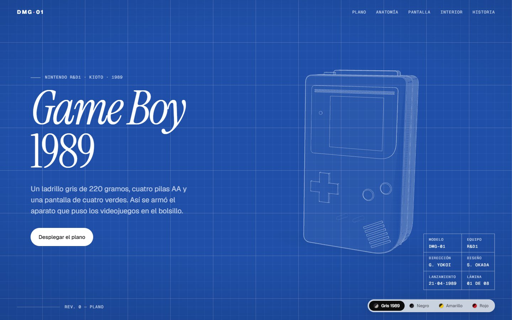
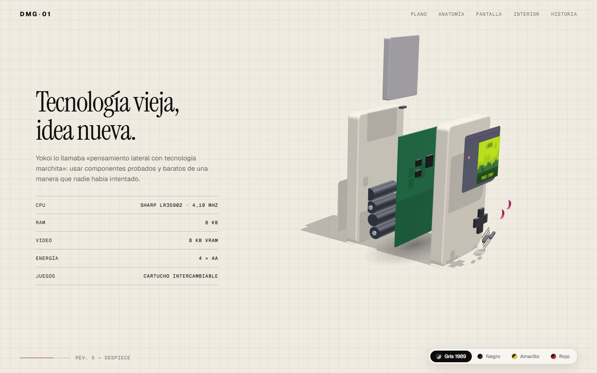
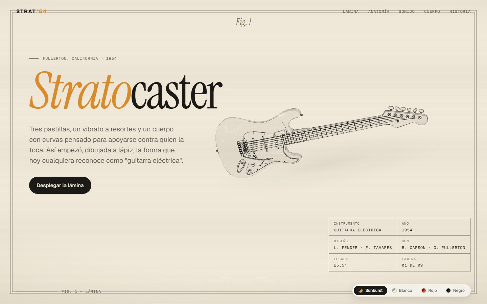
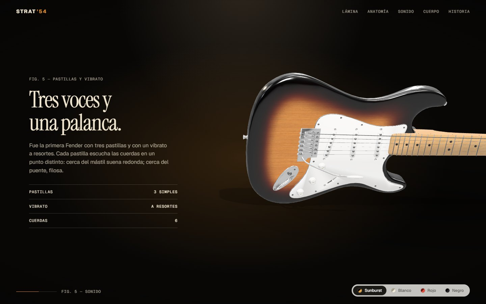
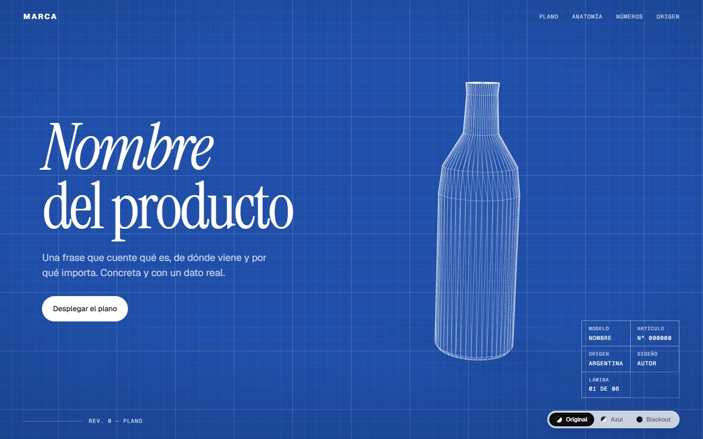
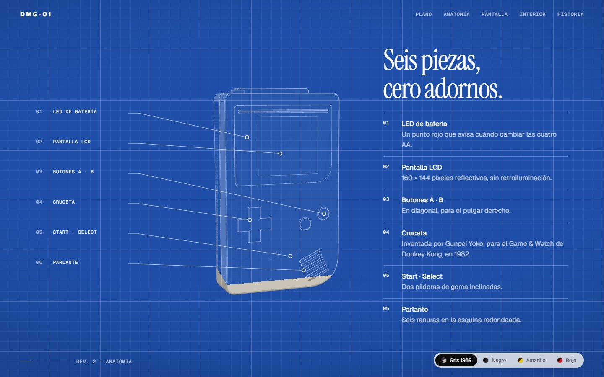
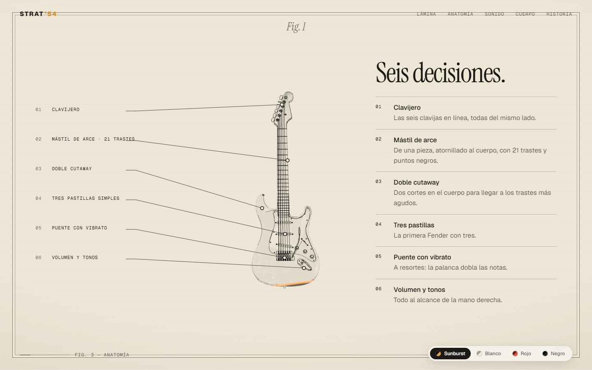
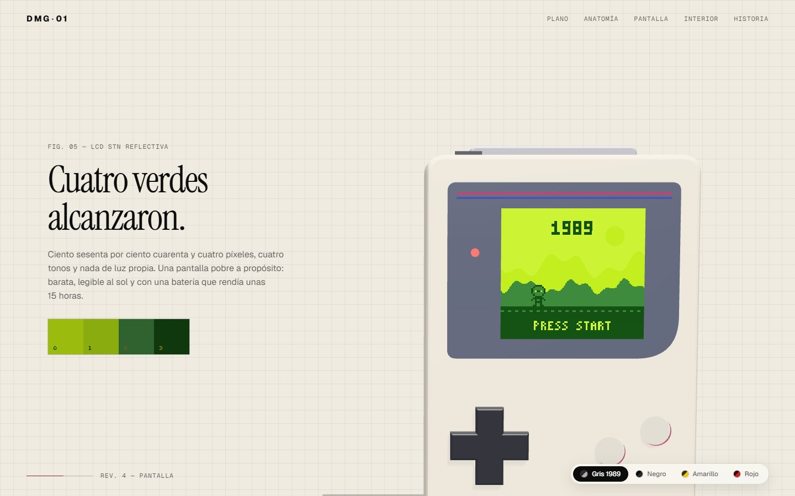
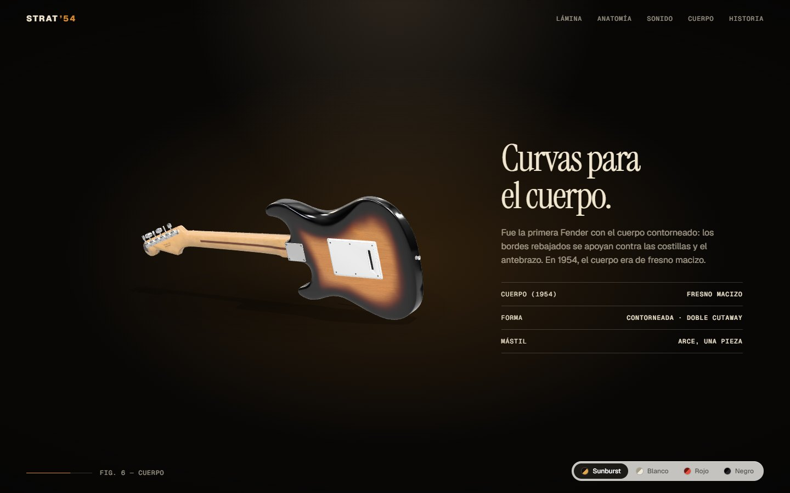

Una skill de Claude · HTML + CSS + JS + Three.js
Landings donde el objeto
se arma al scrollear.
Un objeto 3D protagonista que arranca como dibujo, se vuelve material, muestra sus medidas, se despieza y cambia de color. Para cualquier cosa: una consola, una guitarra, una botella, un mueble, una pieza de museo.
La idea surgió de este post de Evil Rabbit y su toppervenom.com: la landing de las Topper Venom de los 90. Esta skill nace de analizar cómo estaba hecha y llevar la técnica a cualquier objeto.
Demos


Modelo armado por código
Game Boy, 1989
Plano técnico de Nintendo R&D1 → manual de 1989. Cada pieza en milímetros reales: despiece por scroll, pantalla LCD que se enciende y carcasas "Play It Loud!".
Abrir la demo →

Modelo descargado · CC BY
Stratocaster, 1954
Lámina de patente → escenario. Un modelo de Sketchfab optimizado de 22 MB a 1,8 MB, con acabados que pintan solo el cuerpo y una guitarra que se para para mostrar su anatomía.
Abrir la demo →
Punto de partida
La plantilla
La base que usa la skill, con un objeto de ejemplo. Probala con tu modelo: ?model=<url de un .glb>.
Cómo funciona
La calidad no viene del stack —son unos pocos archivos sin framework— sino de cinco cosas que la skill trabaja una por una.
- Un buen modeloEscaneado con el celular, generado con IA, modelado, convertido desde CAD, descargado con licencia o armado por código. Limpio, liviano y a escala real: las cotas salen del modelo.
- Render de estudioTres luces, environment, tone mapping neutro, sombra de contacto y materiales corregidos.
- Un concepto llevado al detallePlano técnico, lámina de patente, ficha de museo, laboratorio… El loader, el rail y cada texto cuentan la misma historia.
- Movimiento con pesoCada sección declara una pose en el HTML; el motor interpola y amortigua. El objeto rota, se mueve y se para con inercia.
- Efectos que justifican el 3DDibujo con líneas ocultas que se vuelve material, despiece, recoloreo por shader, pantallas que se encienden.




<section id="anatomia"
data-ry="0.42" data-rz="1.57" data-x="-0.02" data-scale="0.92"
data-reveal="0.06" data-wire="1" data-callouts="1"
data-m-rz="0.2" data-m-y="0.1"> ← pose en escritorio y en móvilUsarla
En Claude Code
git clone https://github.com/nachoiannella/scroll-3d-landing.git
cp -r scroll-3d-landing/scroll-3d-landing ~/.claude/skills/Claude la usa sola cuando el pedido encaja.
En claude.ai
Descargá scroll-3d-landing.skill y subilo en la sección Skills de la configuración.
Pedidos de ejemplo
- "Quiero una landing para la historia de la cámara Polaroid SX-70, con el 3D que se despliega al scrollear. No tengo modelo."
- "Escaneé una zapatilla con el celular (está en scan.glb). Armame una landing tipo plano técnico con sus medidas y partes."
- "Buscame un modelo libre de una guitarra eléctrica y hacé una página sobre su historia."
- "Tengo el STEP de nuestro parlante. Hacé una página de producto con vista explosionada y los tres colores."